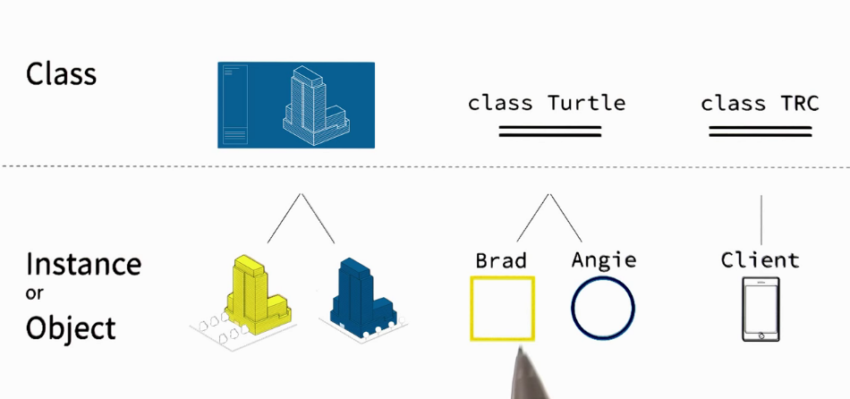
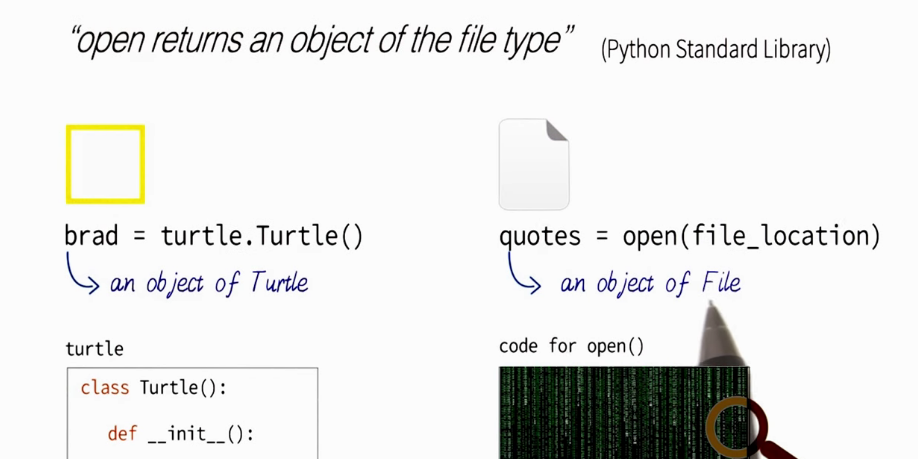
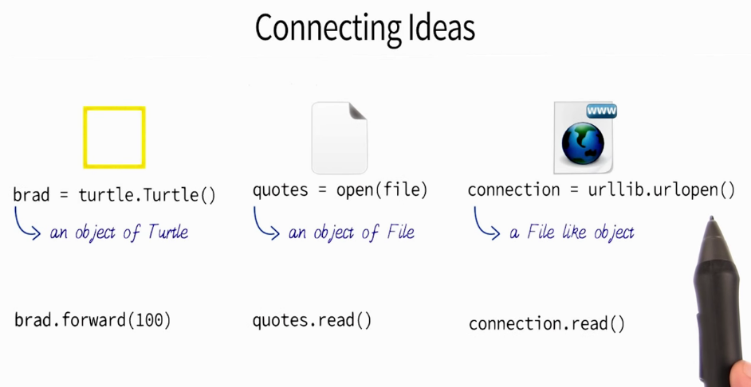
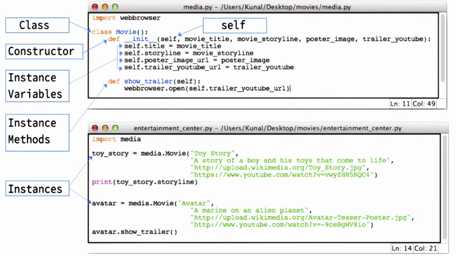
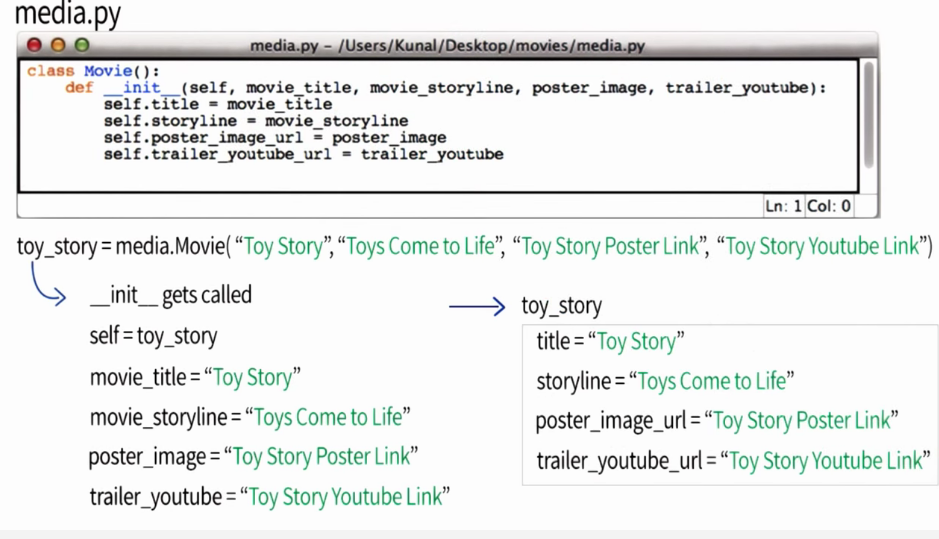

Open IDLE Click File, then new file
Reading Webbrowser Documentation
Abstraction is how a program interprets code, and then does things in the background to execute it.
The definition from whatis.techtarger:
In object-oriented programming, abstraction is one of three central principles (along with encapsulation and inheritance). Through the process of abstraction, a programmer hides all but the relevant data about an object in order to reduce complexity and increase efficiency.
Find documentation by Googling, Python standard library
Make sure you are reading the library for your right version.
A class is like a blue print for an instance.
"A class Turtle, much like a blueprint, contains certain pieces of information about a turtle: the turtle's size, its color, the fact that the Turtle can move forward..."
Calling webbrowser.open() is not the same as turtle.Turle()
When we call turtle.turcle we called for a function inside turtle that create space in memory.
Twilio is one of thousands of python packages that is not included in the python library.
http://www.wikihow.com/Install-Python-Packages-on-Windows-7
Python's from statement lets you import specific attributes from a module into the current namespace. The from...import has the following syntax:
from fib import fibonacci
Source: http://www.tutorialspoint.com/python/python_modules.htm
With brad = turtle.Turle(), we say inside of python there is a file called turtle. And inside that file, is a class called called Turrle. And when we try to access that class using the () statement, we are actually calling in init function defined inside the class. What the init function does is initializes or creates space in memory for a new instance, which we called brad. Brad is an object or instance of the class Turtle. This instance brad can do things defined inside the class Turtle, like, move forward.
A class is like a blueprint, which have some basic information defined inside of them. And you can think of its objects, as examples or instances, of that blue print.

Handy functions:
open() <-- opens the file like movies_quotes.txt. Inside the () add the file path inside "".
<variable>.read() <-- reads the content. You don't need to add anything inside the ().
You can then print the contents as print <variable>
It's handy to close the open document using <variable>.close(). You don't need to add anything inside the ().
How to use open: https://docs.python.org/2/library/functions.html#open
Open also uses a function to create an instance in time. For the example above. We create an instance or object of text, that is, movie_quotes.txt.

In all of these instances, we create instances or objects in python's memory.

The "M" in Class Movie does not have to be capitalize, but Google suggest it should. Google's Python Style Guide for the web http://google-styleguide.googlecode.com/svn/trunk/pyguide.html

__init__ create space in memory.
Class <ClassName>:
def __init__(self, <item>,<item>,<item>):
self.<itemname> = <item>
self.<itemname> = <item>
self.<itemname> = <item>
you always write self.

How to create an instance method? See bold.
Class <ClassName>:
def __init__(self, <item>,<item>,<item>):
self.<itemname> = <item>
self.<itemname> = <item>
self.<itemname> = <item>
def<instancemethodname>(self):
<block>
How to use? Only after creating instance of class the the bold.
<instancename>.<instancemethodname>()How to use class variables? Variables need to be outside the definition. See bold.
Class <ClassName>:
<variable> = <item>
def __init__(self, <item>,<item>,<item>):
self.<itemname> = <item>
self.<itemname> = <item>
self.<itemname> = <item>
def<instancemethodname>(self):
<block>
to print variable do:
<filename>.<classname>.<classvariable>
Google Style Guides say to make constant variables all caps. so <CLASSVARIABLE>
EX: VALID_RATINGS
All classes come with a prepackaged with: ___doc__ that gives information about the class. It is used as follow.
<filename>.<class>.__doc__
Add documentation to your own class by doing the following. See bold.
Class <ClassName>:
"""<insert documentation here via comment>"""
<variable> = <item>
def __init__(self, <item>,<item>,<item>):
self.<itemname> = <item>
self.<itemname> = <item>
self.<itemname> = <item>
def<instancemethodname>(self):
<block>
http://www2.lib.uchicago.edu/keith/courses/python/class/5/
To use inheritance. You need to refer back to the parent. Then add additional items.
Class <ParentClassName>:
<variable> = <item>
def __init__(self, <itemA>,<itemB>):
self.<itemnameA> = <itemB>
self.<itemnameA> = <itemB>
Class<ChildClassName>:
def __init__(self, <itemA>,<itemB>,<itemC>):
<ParentClassName>.__init__(self, <itemA>, <itemB>)
self.<itemnameC> = <itemC>
What is the difference between classes and objects? http://learnpythonthehardway.org/book/ex42.html
If you create a definition (method) inside a class parent, the child can get access to it, even though it is not explicitly called for in the child's class.
If a definition (method) with the same name exists in both the parent and child, the child definition will run only.